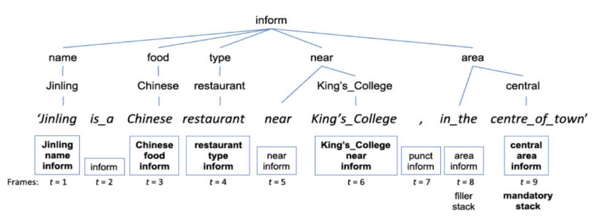

<!DOCTYPE html>
<html lang="en">

<head>
  <meta charset="utf-8" />
    
  <meta name="description" content="Bowen&#39;s Blog" />
  
  <meta name="viewport" content="width=device-width, initial-scale=1, maximum-scale=1" />
  <title>
    Natural Language Generation I |  Bowen&#39;s Blog
  </title>
  <meta name="generator" content="hexo-theme-yilia-plus">
  
  <link rel="shortcut icon" href="/logo.ico" />
  
  
<link rel="stylesheet" href="/css/main.css">

  
  <script src="https://cdn.jsdelivr.net/npm/pace-js@1.0.2/pace.min.js"></script>
  
  

  

<link rel="alternate" href="/atom.xml" title="Bowen's Blog" type="application/atom+xml">
</head>

</html>

<body>
  <div id="app">
    <main class="content">
      <section class="outer">
  <article id="post-Natural-Language-Generation-I" class="article article-type-post" itemscope
  itemprop="blogPost" data-scroll-reveal>

  <div class="article-inner">
    
    <header class="article-header">
       
<h1 class="article-title sea-center" style="border-left:0" itemprop="name">
  Natural Language Generation I
</h1>
  

    </header>
    

    
    <div class="article-meta">
      <a href="/2020/04/28/Natural-Language-Generation-I/" class="article-date">
  <time datetime="2020-04-28T03:24:17.000Z" itemprop="datePublished">2020-04-28</time>
</a>
      
  <div class="article-category">
    <a class="article-category-link" href="/categories/Review/">Review</a>
  </div>

      
      
<div class="word_count">
    <span class="post-time">
        <span class="post-meta-item-icon">
            <i class="ri-quill-pen-line"></i>
            <span class="post-meta-item-text"> 字数统计:</span>
            <span class="post-count">2.5k字</span>
        </span>
    </span>

    <span class="post-time">
        &nbsp; | &nbsp;
        <span class="post-meta-item-icon">
            <i class="ri-book-open-line"></i>
            <span class="post-meta-item-text"> 阅读时长≈</span>
            <span class="post-count">8分钟</span>
        </span>
    </span>
</div>

      
    </div>
    

    
    
    <div class="tocbot"></div>


    

    
    <div class="article-entry" itemprop="articleBody">
      
      

      
      <h1 id="Natural-Language-Generation-I"><a href="#Natural-Language-Generation-I" class="headerlink" title="Natural Language Generation I"></a>Natural Language Generation I</h1><h2 id="NLG-Tasks"><a href="#NLG-Tasks" class="headerlink" title="NLG Tasks"></a>NLG Tasks</h2><p>传统的 NLG 问题可以被划分为如下子问题，越靠前的问题与实际数据的结合越紧密，越往后的问题越具有普适性：</p>
<a id="more"></a>
<ol>
<li>Content determination:<ul>
<li>选择何种内容传递给受众；</li>
<li>使用的方法：<ul>
<li>HMM；</li>
<li>考虑信息之间的联系。</li>
</ul>
</li>
</ul>
</li>
<li>Text structuring:<ul>
<li>考虑信息传递的顺序；</li>
<li>使用的方法：<ul>
<li>Hand-crafted, domain-dependent rules;</li>
<li>ML-approach: find an optimal ordering of ‘information-bearing items’.</li>
</ul>
</li>
</ul>
</li>
<li>Sentence aggregation:<ul>
<li>将一些信息 (message level) 聚集到一个单句中；</li>
<li>使用的方法：<ul>
<li>Hand-crafted, domain-dependent rules;</li>
<li>ML-approach: 根据相似性判定数据库中的条目是否需要聚合，聚合的时候考虑一定的语法规则修改结果，之后找到全局最优的聚合策略。</li>
</ul>
</li>
</ul>
</li>
<li>Lexicalisation:<ul>
<li>将聚合后的句子转换为自然语言，需要语法及表达进行一定的处理;</li>
<li>候选项越多，问题越复杂；</li>
<li>考虑内容约束和风格约束；</li>
<li>使用的方法：<ul>
<li>直接将 message 转化为 lexical item，但可能会引入语义类似但在语境下有偏差的替代词，而且这个转化的映射也很难定义；</li>
<li>Unification-based with grammer rules encoding lexical as well as syntactic choices.</li>
</ul>
</li>
</ul>
</li>
<li>Referring expression generation:<ul>
<li>从文章中选择出能标识该文章领域的单词和短语 ；</li>
<li>使用的方法：<ul>
<li>分类指代词；</li>
<li>根据描述属性是否具有区分性选择。</li>
</ul>
</li>
</ul>
</li>
<li>Linguistic realisation:<ul>
<li>将句子修改为符合语法和日常习惯的表达；</li>
<li>使用的方法：<ul>
<li>human-crafted templates: 只需要往对应位置填空，质量可控，但泛化能力较弱，需要手动构造模板；</li>
<li>human-crafted grammer-based systems：基于语法的模板，有一定的泛化性，但很难设计出符合所有输入及句式的模板；</li>
<li>statistical approaches：在大量语料中学习到语法规则的概率模型，一类是先利用低层次手工构造语法构建词组等可供选择的语料，再使用统计模型将候选排序并选择（或者直接使用统计模型生成）最优的选项，另一类全部使用统计信息生成，或者也可以对生成的语句进行进一步地优化。</li>
</ul>
</li>
</ul>
</li>
</ol>
<p>由上可以看出，这些任务的发展趋势都是由手工构造、领域特定逐步过渡到由大量语料学习到的基于概率统计建模方法。</p>
<h2 id="NLG-Architecture-and-Approaches"><a href="#NLG-Architecture-and-Approaches" class="headerlink" title="NLG Architecture and Approaches"></a>NLG Architecture and Approaches</h2><ol>
<li>Modular architecture: 将任务划分为多个子模块进行求解；</li>
<li>Planning perspectives: 从规划视角看问题，提供一种更少划分的解决方案；</li>
<li>Intergrated or global approches: 从整体解决问题，也是现在 NLP 的主要趋势，比较依赖于统计学习或者机器学习。</li>
</ol>
<p>两大类：数据驱动和知识（手工）驱动。</p>
<h3 id="Modular-Architecture"><a href="#Modular-Architecture" class="headerlink" title="Modular Architecture"></a>Modular Architecture</h3><p></p>
<p>大致分为如下步骤：</p>
<ul>
<li>Text Planner： content selection + text structuring，决定 what to say；</li>
<li>Sentence Planner： sentence aggregation + lexicalisation + referring pression generation，决定 how to say；</li>
<li>Linguistic Realiser：应用语法规则等对最终输出的句子做进一步修改。</li>
</ul>
<p>有时做这样很清晰的划分并不适用于所有任务，所以有人提出了更加灵活的架构，不对任务做清晰划分。</p>
<p>缺陷：</p>
<ul>
<li>上游的错误不可避免地影响到下游；</li>
<li>在前期的任务中难以用规则限制错误。</li>
</ul>
<p>一种改进方案是加入下游任务和上游任务之间的反馈，以及可以不断迭代最终生成的版本。这样就减小了上游任务错误可能导致的影响。</p>
<h3 id="Planning-Based-Approaches"><a href="#Planning-Based-Approaches" class="headerlink" title="Planning-Based Approaches"></a>Planning-Based Approaches</h3><p>使用规划的思想，将初始目标分解为小目标进行求解。这种分解并不像上面的 pipeline 一样对每个问题都进行同样的划分，而是在不同层级的任务上对任务提出不同的约束来控制最后的输出。</p>
<h4 id="Planning-through-the-Grammar"><a href="#Planning-through-the-Grammar" class="headerlink" title="Planning through the Grammar"></a>Planning through the Grammar</h4><p>对语法进行修改，可以将一些语法结构抽象为 operator 的形式，进一步控制生成过程。例如：考虑句子 <em>Mary likes the white rabbit</em>，我们可以将 <em>like</em> 抽象为如下 operator：</p>
<p>likes(u, x, y):</p>
<ul>
<li>Preconditions:<ul>
<li>x likes y 应该在 knowledge base 中（被支持的，符合常理的情况）；</li>
<li>x 是有生命的事物；</li>
<li>语句 u 可以被 S （比如语法树之类的结构）推导出来。</li>
</ul>
</li>
<li>Effect:<ul>
<li>u 变为 S 的一部分；</li>
<li>为 x, y 增加名词词组的节点，并在后续过程中填入。</li>
</ul>
</li>
</ul>
<p>这种方法的好处：一旦实现，可以在很多基于规划的方法中使用；但坏处是人工确定规则工作量大，效率不高。</p>
<h4 id="Stochastic-Planning-under-Uncertainty-using-Reinforcement-Learning"><a href="#Stochastic-Planning-under-Uncertainty-using-Reinforcement-Learning" class="headerlink" title="Stochastic Planning under Uncertainty using Reinforcement Learning"></a>Stochastic Planning under Uncertainty using Reinforcement Learning</h4><p>上面使用的大部分都是基于规则的，考虑一个动作及其影响，这样在复杂的场景下很难有很好的效果。</p>
<p>试图达到一个很好的目标可以看作一个随机优化问题，这和强化学习的想法是相近的。</p>
<p>生成过程可以看作为一个马尔科夫决策过程，t 时刻到 t + 1 时刻的转移与动作 a 及其概率有关。RL 的架构能更好地处理变化环境中的非确定性。</p>
<p>RL 的结构可以通过共享子任务中学得的知识，并适应对子任务的不同约束。一些层次化的联合的模型被提出，它完成从选择内容到最终美化输出一系列的任务，相比对多个子任务分别建模，联合建模能控制子任务之间的联系，表现更好。</p>
<h3 id="Data-driven-Approach"><a href="#Data-driven-Approach" class="headerlink" title="Data-driven Approach"></a>Data-driven Approach</h3><h4 id="获取数据"><a href="#获取数据" class="headerlink" title="获取数据"></a>获取数据</h4><p>数据是 data-driven 方法的前提。</p>
<p>研究人员尝试从之前常用的 tree-bank 数据和近期的大语料数据中构建新的数据集。</p>
<p>比较重要的方法是如何对数据进行对齐，以及如何处理半结构化的数据。</p>
<p>有人提出使用概率生成模型进行数据对齐，概率值综合考虑三种不同的因素，之后最大化期望。</p>
<p>另外有人提出使用众包策略收集信息，尽可能简化标注难度以获得更多更优质的数据。</p>
<p>依赖对齐数据的模型只适用于特定的几个领域，泛化能力较差。目前更多的模型避免了对齐数据的需要，在训练过程中可以自动对齐（例如：神经网络 + Attention 等）。</p>
<h4 id="Sequential-Stochastic-Process"><a href="#Sequential-Stochastic-Process" class="headerlink" title="Sequential, Stochastic Process"></a>Sequential, Stochastic Process</h4><p>当可以使用对齐数据时，一种生成方法是使用统计模型进行内容选择，之后使用规则、模板等进行真实化。</p>
<p>有研究人员将生成过程建模为一个序列马尔科夫过程。选择内容根据历史对话数据以及重要属性（对话生成领域），真实化使用模板加 n-gram 模型。</p>
<p>一般的决策过程只考虑历史数据对当前数据的影响，而没有考虑到当前的决策可能影响到以后的决策，于是有人提出了递归预测左右成分的解决方案，效果比只从单方向考虑要好。</p>
<p>Mairesse and Young 提出使用动作树 + 语义栈来进行对话生成，选择概率最大的 stack 序列对应的 word sequence 生成。</p>
<p></p>
<h4 id="Classification-and-optimisation"><a href="#Classification-and-optimisation" class="headerlink" title="Classification and optimisation"></a>Classification and optimisation</h4><p>NLG 也可以看作一个分类问题，当前状态生成的词可以看作是根据当前输入和上个分类器的输入，在若干候选词中进行选择。之后，生成多个待选词并排序的途径也被提出。</p>
<p>Pipeline 结构的生成有错误传播的风险，于是可以将 NLG 看成一个优化问题，多次迭代减小上游误差对下游的影响。实验发现优化的方法会比 分类+pipeline 的方法表现好。</p>
<h4 id="Parsing"><a href="#Parsing" class="headerlink" title="Parsing"></a>Parsing</h4><p>使用 Probabilistic Context-Free Grammar 的思想，用表达式推导来表示决策过程。语言生成过程可以看成自下而上的构建过程（是否可以构建出开始的目标），过程中可以使用像 CYK 这样自下而上的算法帮助构建。</p>
<h4 id="Deep-Learning-Methods"><a href="#Deep-Learning-Methods" class="headerlink" title="Deep Learning Methods"></a>Deep Learning Methods</h4><p>目前逐渐成为主流方法。目前使用神经网络的一个很重要的应用是学习语言的高层次抽象表征，特别是 dense, low-dimensional, distributed 表征。</p>
<h4 id="Encoder-Decoder-结构"><a href="#Encoder-Decoder-结构" class="headerlink" title="Encoder-Decoder 结构"></a>Encoder-Decoder 结构</h4><p>使用 RNN 将输入编码到一个表征向量中，之后使用 decoder-RNN 得到输出。输入和输出的解码使得输入的编码具有在多个子任务中使用的可能性。Attention 机制的提出使得在生成过程中可以自动考虑和 input 序列之间的联系，无需手动对齐。所以 SEQ2SEQ + Attention 是目前比较常用的生成方法。</p>
<h4 id="Conditioned-Language-Models"><a href="#Conditioned-Language-Models" class="headerlink" title="Conditioned Language Models"></a>Conditioned Language Models</h4><p>另一种生成方法是将 generator 看成 conditioned language model，输出是从以输入特征作为条件的分布中采样得到的，这里的输入特征可以有很多种，例如语义、内容或者风格属性等。</p>
<h3 id="讨论"><a href="#讨论" class="headerlink" title="讨论"></a>讨论</h3><p>目前的发展趋势越来越倾向于模糊化各个子任务之间的边界，区分的不是那么明显。对于数据驱动的方法，获取高质量的数据是生成高质量文本的重要条件。有些系统对数据的要求比较高，需要对齐的数据，另一些系统则要求不高（例如 attention 机制）。目前非常重要的一方向是试图学习到分布式的、可重用的特征表达（例如：word-embedding 等），这些特征表达无需重复训练，之后的任务可以直接使用，提高了效率，会产生比较广泛的影响（transfer learning，现在的 bert 等）。</p>

      
      <!-- reward -->
      
      <div id="reward-btn">
        打赏
      </div>
      
    </div>
    
    
      <!-- copyright -->
      
        <div class="declare">
          <ul class="post-copyright">
            <li>
              <i class="ri-copyright-line"></i>
              <strong>版权声明： </strong s>
              本博客所有文章除特别声明外，均采用 <a href="https://www.apache.org/licenses/LICENSE-2.0.html" rel="external nofollow"
                target="_blank">Apache License 2.0</a> 许可协议。转载请注明出处！
            </li>
          </ul>
        </div>
        
    <footer class="article-footer">
      
          
<div class="share-btn">
      <span class="share-sns share-outer">
        <i class="ri-share-forward-line"></i>
        分享
      </span>
      <div class="share-wrap">
        <i class="arrow"></i>
        <div class="share-icons">
          
          <a class="weibo share-sns" href="javascript:;" data-type="weibo">
            <i class="ri-weibo-fill"></i>
          </a>
          <a class="weixin share-sns wxFab" href="javascript:;" data-type="weixin">
            <i class="ri-wechat-fill"></i>
          </a>
          <a class="qq share-sns" href="javascript:;" data-type="qq">
            <i class="ri-qq-fill"></i>
          </a>
          <a class="douban share-sns" href="javascript:;" data-type="douban">
            <i class="ri-douban-line"></i>
          </a>
          <!-- <a class="qzone share-sns" href="javascript:;" data-type="qzone">
            <i class="icon icon-qzone"></i>
          </a> -->
          
          <a class="facebook share-sns" href="javascript:;" data-type="facebook">
            <i class="ri-facebook-circle-fill"></i>
          </a>
          <a class="twitter share-sns" href="javascript:;" data-type="twitter">
            <i class="ri-twitter-fill"></i>
          </a>
          <a class="google share-sns" href="javascript:;" data-type="google">
            <i class="ri-google-fill"></i>
          </a>
        </div>
      </div>
</div>

<div class="wx-share-modal">
    <a class="modal-close" href="javascript:;"><i class="ri-close-circle-line"></i></a>
    <p>扫一扫，分享到微信</p>
    <div class="wx-qrcode">
      
    </div>
</div>

<div id="share-mask"></div>
      
      
  <ul class="article-tag-list" itemprop="keywords"><li class="article-tag-list-item"><a class="article-tag-list-link" href="/tags/NLG/" rel="tag">NLG</a></li><li class="article-tag-list-item"><a class="article-tag-list-link" href="/tags/NLP/" rel="tag">NLP</a></li></ul>


    </footer>

  </div>

  
  
  <nav class="article-nav">
    
    
      <a href="/2020/04/19/Neural-Style-Transfer-Review-IV/" class="article-nav-link">
        <strong class="article-nav-caption">下一篇</strong>
        <div class="article-nav-title">Neural Style Transfer Review IV</div>
      </a>
    
  </nav>


  

  
  
<!-- valine评论 -->
<div id="vcomments-box">
    <div id="vcomments">
    </div>
</div>
<script src="//cdn1.lncld.net/static/js/3.0.4/av-min.js"></script>
<script src='https://cdn.jsdelivr.net/npm/valine@1.3.10/dist/Valine.min.js'></script>
<script>
    new Valine({
        el: '#vcomments',
        app_id: '',
        app_key: '',
        path: window.location.pathname,
        notify: 'false',
        verify: 'false',
        avatar: 'mp',
        placeholder: '给我的文章加点评论吧~',
        recordIP: true
    });
    const infoEle = document.querySelector('#vcomments .info');
    if (infoEle && infoEle.childNodes && infoEle.childNodes.length > 0) {
        infoEle.childNodes.forEach(function (item) {
            item.parentNode.removeChild(item);
        });
    }
</script>
<style>
    #vcomments-box {
        padding: 5px 30px;
    }

    @media screen and (max-width: 800px) {
        #vcomments-box {
            padding: 5px 0px;
        }
    }

    #vcomments-box #vcomments {
        background-color: #fff;
    }

    .v .vlist .vcard .vh {
        padding-right: 20px;
    }

    .v .vlist .vcard {
        padding-left: 10px;
    }
</style>

  

  
  
  

</article>
</section>
      <footer class="footer">
  <div class="outer">
    <ul class="list-inline">
      <li>
        &copy;
        2020
        Bowen
      </li>
      <li>
        
        Powered by
        
        
        <a href="https://hexo.io" target="_blank">Hexo</a> Theme <a href="https://github.com/Shen-Yu/hexo-theme-ayer" target="_blank">Ayer</a>
        
      </li>
    </ul>
    <ul class="list-inline">
      <li>
        
      </li>
      
      <li>
        <!-- cnzz统计 -->
        
      </li>
    </ul>
  </div>
</footer>
      <div class="to_top">
        <div class="totop" id="totop">
  <i class="ri-arrow-up-line"></i>
</div>
      </div>
    </main>
    <aside class="sidebar">
      <button class="navbar-toggle"></button>
<nav class="navbar">
  
  <div class="logo">
    <a href="/"></a>
  </div>
  
  <ul class="nav nav-main">
    
    <li class="nav-item">
      <a class="nav-item-link" href="/">主页</a>
    </li>
    
    <li class="nav-item">
      <a class="nav-item-link" href="/archives">归档</a>
    </li>
    
    <li class="nav-item">
      <a class="nav-item-link" href="/categories">分类</a>
    </li>
    
    <li class="nav-item">
      <a class="nav-item-link" href="/tags">标签</a>
    </li>
    
    <li class="nav-item">
      <a class="nav-item-link" href="http://home.ustc.edu.cn/~zhangbowen" target="_blank" rel="noopener">关于我</a>
    </li>
    
  </ul>
</nav>
<nav class="navbar navbar-bottom">
  <ul class="nav">
    <li class="nav-item">
      
      <a class="nav-item-link nav-item-search"  title="Search">
        <i class="ri-search-line"></i>
      </a>
      
      
      <a class="nav-item-link" target="_blank" href="/atom.xml" title="RSS Feed">
        <i class="ri-rss-line"></i>
      </a>
      
    </li>
  </ul>
</nav>
<div class="search-form-wrap">
  <div class="local-search local-search-plugin">
  <input type="search" id="local-search-input" class="local-search-input" placeholder="Search...">
  <div id="local-search-result" class="local-search-result"></div>
</div>
</div>
    </aside>
    <div id="mask"></div>

<!-- #reward -->
<div id="reward">
  <span class="close"><i class="ri-close-line"></i></span>
  <p class="reward-p"><i class="ri-cup-line"></i>请我喝杯咖啡吧~</p>
  <div class="reward-box">
    
    <div class="reward-item">
      
      <span class="reward-type">支付宝</span>
    </div>
    
    
    <div class="reward-item">
      
      <span class="reward-type">微信</span>
    </div>
    
  </div>
</div>
    
<script src="/js/jquery-2.0.3.min.js"></script>


<script src="/js/share.js"></script>


<script src="/js/lazyload.min.js"></script>


<script>
  try {
    var typed = new Typed("#subtitle", {
      strings: ['没有什么会永垂不朽', '二十年后还是一样轻狂，一样不枉', '想要的都拥有，得不到的都释怀'],
      startDelay: 0,
      typeSpeed: 200,
      loop: true,
      backSpeed: 100,
      showCursor: true
    });
  } catch (err) {
  }

</script>


<script src="/js/tocbot.min.js"></script>

<script>
  // Tocbot_v4.7.0  http://tscanlin.github.io/tocbot/
  tocbot.init({
    tocSelector: '.tocbot',
    contentSelector: '.article-entry',
    headingSelector: 'h1, h2, h3, h4, h5, h6',
    hasInnerContainers: true,
    scrollSmooth: true,
    scrollContainer: 'main',
    positionFixedSelector: '.tocbot',
    positionFixedClass: 'is-position-fixed',
    fixedSidebarOffset: 'auto',
    onClick: (e) => {
      $('.toc-link').removeClass('is-active-link');
      $(`a[href=${e.target.hash}]`).addClass('is-active-link');
      $(e.target.hash).scrollIntoView();
      return false;
    }
  });
</script>


<script src="https://cdn.jsdelivr.net/npm/jquery-modal@0.9.2/jquery.modal.min.js"></script>
<link rel="stylesheet" href="https://cdn.jsdelivr.net/npm/jquery-modal@0.9.2/jquery.modal.min.css">
<script src="https://cdn.jsdelivr.net/npm/justifiedGallery@3.7.0/dist/js/jquery.justifiedGallery.min.js"></script>

<script src="/js/ayer.js"></script>


<!-- Root element of PhotoSwipe. Must have class pswp. -->
<div class="pswp" tabindex="-1" role="dialog" aria-hidden="true">

    <!-- Background of PhotoSwipe. 
         It's a separate element as animating opacity is faster than rgba(). -->
    <div class="pswp__bg"></div>

    <!-- Slides wrapper with overflow:hidden. -->
    <div class="pswp__scroll-wrap">

        <!-- Container that holds slides. 
            PhotoSwipe keeps only 3 of them in the DOM to save memory.
            Don't modify these 3 pswp__item elements, data is added later on. -->
        <div class="pswp__container">
            <div class="pswp__item"></div>
            <div class="pswp__item"></div>
            <div class="pswp__item"></div>
        </div>

        <!-- Default (PhotoSwipeUI_Default) interface on top of sliding area. Can be changed. -->
        <div class="pswp__ui pswp__ui--hidden">

            <div class="pswp__top-bar">

                <!--  Controls are self-explanatory. Order can be changed. -->

                <div class="pswp__counter"></div>

                <button class="pswp__button pswp__button--close" title="Close (Esc)"></button>

                <button class="pswp__button pswp__button--share" style="display:none" title="Share"></button>

                <button class="pswp__button pswp__button--fs" title="Toggle fullscreen"></button>

                <button class="pswp__button pswp__button--zoom" title="Zoom in/out"></button>

                <!-- Preloader demo http://codepen.io/dimsemenov/pen/yyBWoR -->
                <!-- element will get class pswp__preloader--active when preloader is running -->
                <div class="pswp__preloader">
                    <div class="pswp__preloader__icn">
                        <div class="pswp__preloader__cut">
                            <div class="pswp__preloader__donut"></div>
                        </div>
                    </div>
                </div>
            </div>

            <div class="pswp__share-modal pswp__share-modal--hidden pswp__single-tap">
                <div class="pswp__share-tooltip"></div>
            </div>

            <button class="pswp__button pswp__button--arrow--left" title="Previous (arrow left)">
            </button>

            <button class="pswp__button pswp__button--arrow--right" title="Next (arrow right)">
            </button>

            <div class="pswp__caption">
                <div class="pswp__caption__center"></div>
            </div>

        </div>

    </div>

</div>

<link rel="stylesheet" href="https://cdn.jsdelivr.net/npm/photoswipe@4.1.3/dist/photoswipe.min.css">
<link rel="stylesheet" href="https://cdn.jsdelivr.net/npm/photoswipe@4.1.3/dist/default-skin/default-skin.min.css">
<script src="https://cdn.jsdelivr.net/npm/photoswipe@4.1.3/dist/photoswipe.min.js"></script>
<script src="https://cdn.jsdelivr.net/npm/photoswipe@4.1.3/dist/photoswipe-ui-default.min.js"></script>

<script>
    function viewer_init() {
        let pswpElement = document.querySelectorAll('.pswp')[0];
        let $imgArr = document.querySelectorAll(('.article-entry img:not(.reward-img)'))

        $imgArr.forEach(($em, i) => {
            $em.onclick = () => {
                // slider展开状态
                // todo: 这样不好，后面改成状态
                if (document.querySelector('.left-col.show')) return
                let items = []
                $imgArr.forEach(($em2, i2) => {
                    let img = $em2.getAttribute('data-idx', i2)
                    let src = $em2.getAttribute('data-target') || $em2.getAttribute('src')
                    let title = $em2.getAttribute('alt')
                    // 获得原图尺寸
                    const image = new Image()
                    image.src = src
                    items.push({
                        src: src,
                        w: image.width || $em2.width,
                        h: image.height || $em2.height,
                        title: title
                    })
                })
                var gallery = new PhotoSwipe(pswpElement, PhotoSwipeUI_Default, items, {
                    index: parseInt(i)
                });
                gallery.init()
            }
        })
    }
    viewer_init()
</script>


<script type="text/x-mathjax-config">
  MathJax.Hub.Config({
      tex2jax: {
          inlineMath: [ ['$','$'], ["\\(","\\)"]  ],
          processEscapes: true,
          skipTags: ['script', 'noscript', 'style', 'textarea', 'pre', 'code']
      }
  });

  MathJax.Hub.Queue(function() {
      var all = MathJax.Hub.getAllJax(), i;
      for(i=0; i < all.length; i += 1) {
          all[i].SourceElement().parentNode.className += ' has-jax';
      }
  });
</script>

<script src="https://cdn.jsdelivr.net/npm/mathjax@2.7.6/unpacked/MathJax.js?config=TeX-AMS-MML_HTMLorMML"></script>
<script>
  var ayerConfig = {
    mathjax: true
  }
</script>


<script type="text/javascript" src="https://js.users.51.la/20544303.js"></script>

    
    <div id="music">
    
    
    
    <iframe frameborder="no" border="1" marginwidth="0" marginheight="0" width="200" height="52"
        src="//music.163.com/outchain/player?type=3&id=2063028227&auto=0&height=32"></iframe>
</div>

<style>
    #music {
        position: fixed;
        right: 15px;
        bottom: 0;
        z-index: 998;
    }
</style>
    
  </div>
<script type="text/x-mathjax-config">
    MathJax.Hub.Config({
        tex2jax: {
            inlineMath: [ ["$","$"], ["\\(","\\)"] ],
            skipTags: ['script', 'noscript', 'style', 'textarea', 'pre', 'code'],
            processEscapes: true
        }
    });
    MathJax.Hub.Queue(function() {
        var all = MathJax.Hub.getAllJax();
        for (var i = 0; i < all.length; ++i)
            all[i].SourceElement().parentNode.className += ' has-jax';
    });
</script>
<script src="https://cdnjs.cloudflare.com/ajax/libs/mathjax/2.7.1/MathJax.js?config=TeX-MML-AM_CHTML"></script>
</body>

</html>